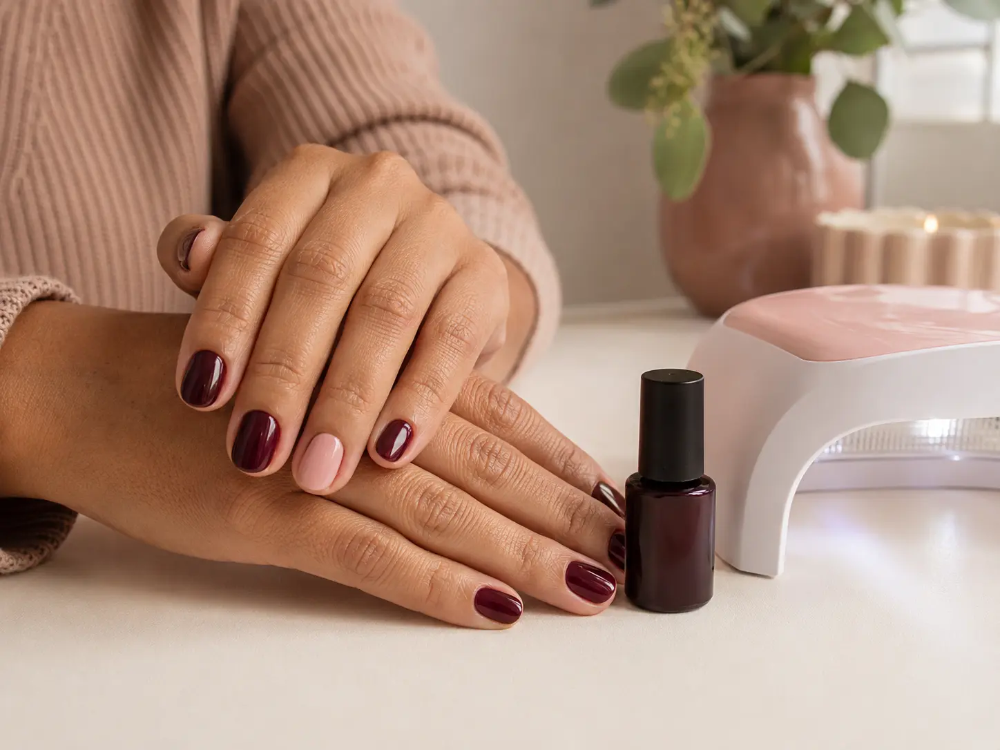

Guía · 6 min
¿Manicure tradicional o semipermanente? Guía para elegir
Compara manicure tradicional y semipermanente: duración, retiro, acabado y cuál puede ajustarse mejor a tu rutina.
Leer artículo →Guía de cuidado
Respuestas claras para elegir tu servicio, preparar la cita y mantener el acabado por más tiempo.

Compara manicure tradicional y semipermanente: duración, retiro, acabado y cuál puede ajustarse mejor a tu rutina.
Leer artículo →Descubre cuánto puede durar un manicure semipermanente y qué hábitos, productos y factores influyen en el acabado.
Leer artículo →
Consejos sencillos para proteger el esmalte, el brillo y el borde de tus uñas después de un manicure.
Leer artículo →
Prepara el espacio y la información necesaria para que tu cita de manicure a domicilio sea cómoda y eficiente.
Leer artículo →¿Ya elegiste tu servicio?
Atención a domicilio en Salitre, Modelia y sectores cercanos.
Escribir por WhatsApp